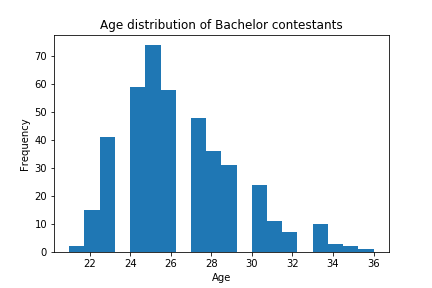
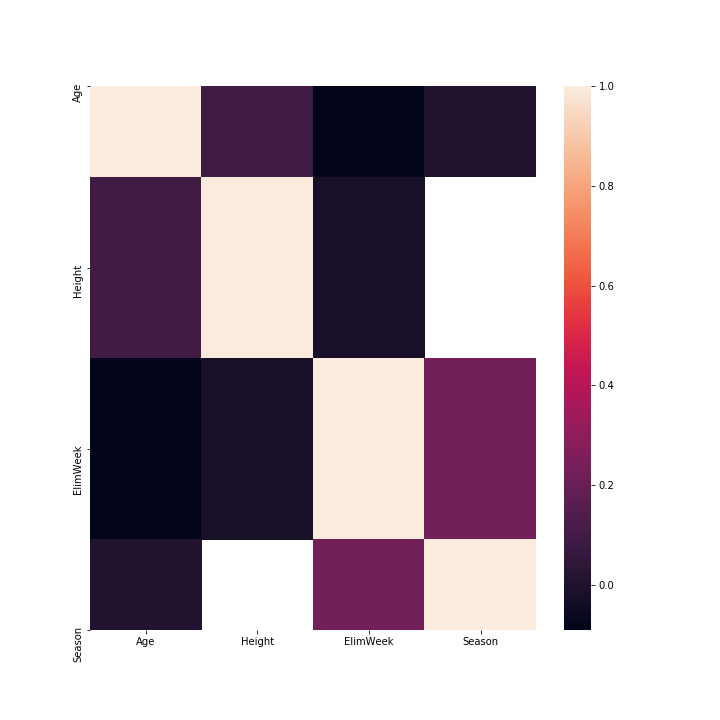

The Bachelor Nation has grown over the last 28 seasons. Chris Harrison has lead the nation through drama, heartbreak, but ultimately love. Each season, there is one bachelor (or bachelorette) who has to pick a partner out of 30 people - over the course of 10 weeks. However, as I have grown older, I have faced the stark reality that these are my peers on the show, not just these imaginary older women - which is what I felt like when I was younger. So, for this essay, I wanted to see if there was any correlation involving age and other varibles. The data we are looking at is from Kaggle. Specifically, this datatset, the bachelor contestants. It goes over 16 odd seasons.
To begin reading the data, I wanted to understand the range of ages that the contestants were. In python, I coded this to calculate the min/max of the dataset. This helps us to understand the min/max of our data, and see the youngest and oldest contestants.
max_age = max(df['Age'].values)
min_age = min(df['Age'])
Max age: 36.0; Min age: 21.0
The next step is to plot this on a graph to visually see the age data. In this histogram, also plotted in Python, displays the the age frequency of Bachelor Contesetants.  As you can see here, the most common age is 25. The outliers in the data are the min/max, and there are some ages unaccounted for. This shows that the data is (NAN), or missing. This age has been prescribed to us as a society as the age where we are supposed to get married and start a family. Some of these girls are just 21 years old, the same age as me. On the other hand, the oldest age on the Bachelor is 36, and that seems almost too old to start a family, culturally.The average age of the girls who stayed the longest, is 26 years old. This is caluclated with the average ages, compared to their elimination week. The last elimination week possible is week 10, when there are only two people left.
To find even more possible correlation, I decided to create a heatmap to visually see any correlation. Now before we dive into the heatmap, I want to explain it because it can be a bit confusing to read. As stated before, some values have no data recorded, so in the heatmap they show up as white. Now, because I use the same data for both axis, the correlation will be 100% due to them being the exact same category. Let's take a look -

So, excluding the white sections and the sections that are exactly 100%, we can see some interesting visualiztion correlation. The scale to the right shows how much correlation there is between categories, so, the lightest color (excluding white) has the most correlation, while the darker colors have some correlation, and finally the completely black squares have no correlation. For instance, there seems to be a slight correlation between Elimination Week and Season. There is also a very slight correlation between Height and Age. It seems like the only categories with no correlation are Age and Elimination Week, which throws a wrench in my overall question. Nevertheless, we do see some correlation on the board.
In this day and age of dating too young, finding love via reality TV show, we learn a lot from the data collected. Today, we learned that there isn't a large correlation between age and elinination week, which I believe is a good thing. When I started this research I was worried that it would tell me that the older women get voted off sooner, because culturally we don't usually see women starting family realtionships after 30. This gives me hope! I think it is time we move away culturally from women having to start their familial lives so early, like 21. At this point in my life, I am not interested in starting a family, I am much more concerned with learning and expanding my career. Historically, it does seem like women have a choice to make, between work and having a family. What would you choose?
Thank you for reading my response! If you wish to see my other pages, click here! I wanted to keep my CSS seperate from the HTML, for easy reading. If you desire to look at the CSS code, click here